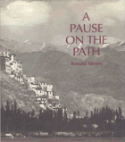

A travel diary in which photographs and expressionistic narrative draw the reader into an experience of monastic life in Buddhist Ladakh
A travel diary in which photographs and expressionistic narrative draw the reader into an experience of monastic life in Buddhist Ladakh


 A travel diary in which photographs and expressionistic narrative draw the reader into an experience of monastic life in Buddhist Ladakh
A travel diary in which photographs and expressionistic narrative draw the reader into an experience of monastic life in Buddhist Ladakh

|  |
A Pause on the PathRonald Silverscloth EAN: 978-0-87722-559-1 (ISBN: 0-87722-559-1) |
"This is a fascinating and beautiful study. The images are extraordinary, stunning, exquisite black and white photographs, each in itself a study. It is about us as journeyers through a world which we inhabit and which we find other people with different ways also inhabiting. Silvers has done an incredible job showing the possibilities of such journeys into worlds-never losing oneself totally—yet feeling the possibilities of achieving such losses and recapturings. The book represents a refreshing, innovative, and original mode for expressing/presenting visual images and text. Its phenomenological perspective is reflexive and reflective, subtle and not didactic. This fine book is an important and significant addition to visual studies."
—George Psathas, Boston University
A Pause on the Path is a travel diary in which photographs and expressionistic narrative draw the reader into an experience of village and monastic life in Buddhist Ladakh. Ronald Silvers tells of his journey during three summers in which he discovers a world that is unfamiliar, but never strange. Traveling through the countryside of this Tibetan plateau, encountering daily family life, witnessing the creating and celebration of a ceremonial mandala, he passed into a liminal region, between the place of an outsider and that of a participant.
Silvers� photography forced him to confront and understand—the significance of the Ladakhi gaze: a look of unprotected and unjudging receptiveness in the faces of both children and adults. Such moments of quietness and suspended activity—such pauses—became a signal to the author that he had entered a region where photography could become a medium of the same receptivity. In the stillness of the pause he lost all meaning of symbolic form and entered into an awareness of the presocial bonding of common human existence with the people of Ladakh.
Silvers� compelling photographs and poetic text achieve his intent as a photographer/writer: "not so much to inform and explain but most of all to arouse longing for a world the reader has never inhabited but has always known."
"A record of the author's trips to a Buddhist village in Tibet between 1983 and 1985, this collection of black-and-white photographs and descriptive prose was assembled to 'provide a sense of the movement of a journey,' capturing 'an arrested movement between / a gesture completed and a gesture to come.' "
—Publishers Weekly
Ronald Silvers is on the faculty of the Ontario Institute for Studies in Education, and the School of Graduate Studies of the University of Toronto.
Visual Studies, edited by Douglas Harper.
Visual Studies, edited by Douglas Harper, will consist of a broad range of books that regard photography, film, and other visual media as vehicles for exploring social and cultural themes. We are developing a series of illustrated books that draw on photographs as primary documents and that include a substantial analytic text; however, we will also consider unillustrated manuscripts on visual subjects. Douglas Harper is a photographer and sociologist who teaches at Potsdam College of the State University of New York.
© 2015 Temple University. All Rights Reserved. This page: http://www.temple.edu/tempress/titles/569_reg.html.